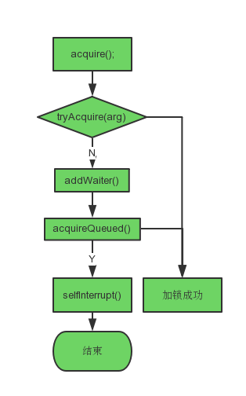
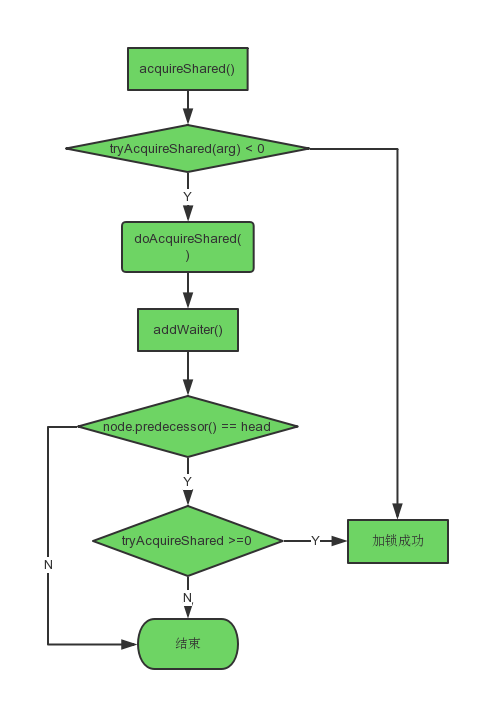
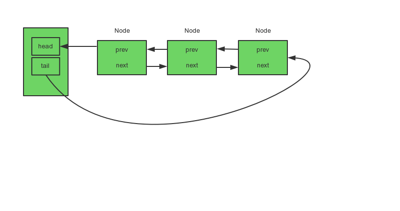
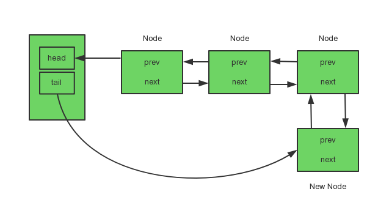

AQS类介绍
AQS类全称AbstractQueuedSynchronizer，Java在AQS类中提供了一系列的模板代码，用来实现Java中一系列的同步工具，很多同步工具都是通过内部类继承自AQS类，通过重写AQS类的方法来实现的，如ReentrantLock类、ReentrantReadWriteLock等。
AQS中使用了一个volatile的int类型变量state来表示线程状态，使用Node实现FIFO队列来完成线程的排队执行。
AQS类主要方法介绍
AQS中通过state来表示线程状态，自然有线程状态相关的方法：
1 | protected final int getState() { |
compareAndSetState方法，compareAndSetState通过调用Unsafe中的方法来确保变量原子性的改变
1 | protected final boolean compareAndSetState(int expect, int update) { |
一般对于一个同步工具，继承AQS类后，只需调用acquire模板代码加独占锁，调用acquireShared模板代码加共享锁
acquire源码：
1 | public final void acquire(int arg) { |
acquireShared源码：
1 | public final void acquireShared(int arg) { |
AQS中还提供了如下其他的模板代码：
1 | public final void acquireInterruptibly(int arg) |
acquireInterruptibly(int arg)：以独占模式获取对象，如果被中断则中止；
1 | public final void acquireSharedInterruptibly(int arg) |
acquireSharedInterruptibly(int arg)：以共享模式获取对象，如果被中断则中止；
而AQS类里的tryAcquire方法和tryAcquireShared方法都是交给子类去实现，需要实现判断某线程是否能获得锁的逻辑。AQS类里调用这些个方法是直接抛出异常的，AQS类里需要子类实现的方法及作用有如下几个：
- tryAcquire(int arg)：尝试在独占模式下获取对象锁；
- tryAcquireShared(int arg)：尝试在共享模式下获取对象锁；
- tryRelease(int arg)：尝试释放独占锁；
- tryReleaseShared(int arg)：尝试释放共享锁；
独占锁acquire加锁与释放
加锁
acquire源码：
1 | public final void acquire(int arg) { |
addWaiter接收一个节点模式的参数，这个参数在AQS内部类Node里面维护，关于Node的FIFO队列将在后面详细介绍。
addWaiter方法源码：
1 | private Node addWaiter(Node mode) { |
enq方法：
1 | private Node enq(final Node node) { |
简而言之，addWaiter方法是将获取锁失败的线程添加至等待链表的尾节点；
acquireQueued源码：
1 | final boolean acquireQueued(final Node node, int arg) { |
独占锁的获取流程如图所示：

释放
AQS里独占锁释放的模板代码是由release()方法实现；
release()方法源码：
1 | public final boolean release(int arg) { |
共享锁acquireShared的加锁与释放
加锁
acquireShared源码：
1 | public final void acquireShared(int arg) { |
子类实现的tryAcquireShared方法加锁失败后，运行AQS的doAcquireShared()方法，doAcquireShared()源码：
1 | private void doAcquireShared(int arg) { |

释放
释放时通过AQS类的releaseShared()方法实现的，源码：
1 | public final boolean releaseShared(int arg) { |
doReleaseShared()方法源码：
1 | private void doReleaseShared() { |
acquireInterruptibly()
acquireInterruptibly(int arg)：以独占模式获取对象，如果被中断则中止；从上面的源码我们可以看出：它首先交由子类尝试加锁，当加锁失败时，会调用AQS类的doAcquireInterruptibly()方法；
而doAcquireInterruptibly()方法与acquireQueued()方法唯一不同的是：acquireQueued()在判断当前线程应该被中断时，将中断标识设置成true并继续运行，而doAcquireInterruptibly()方法则是判断当前线程应该被中断时，抛出异常；
源码对比如下：
1 | //acquireQueued()方法中： |
acquireSharedInterruptibly()
acquireSharedInterruptibly(int arg)：以共享模式获取对象，如果被中断则中止；与doAcquireInterruptibly()方法一样，它与doAcquireShared()方法唯一不同的也是：它调用的doAcquireSharedInterruptibly()方法会在判断当前线程处于中断状态时会抛出异常。
源码对比如下：
1 | //doAcquireShared()方法中： |
AQS类FIFO队列介绍
前面说到AQS类里面维护了一个FIFO队列，这个队列里的每个节点代表着一个需要获取锁的线程，这个队列是个双向链表实现的；节点是定义在AQS类里的一个内部类Node，Node里有两个标志线程模式状态的变量SHARED和EXCLUSIVE，SHARED代表共享模式，EXCLUSIVE代表独占模式；
Node中还用了waitStatus变量来表示线程的状态，waitStatus可取值：SIGNAL、CANCELLED、CONDITION、PROPAGATE、0；
- 其中SIGNAL的值为-1，代表后继结点处于等待状态，如果当前线程释放的同步状态或者被中断，将会通知后继结点，使后继结点线程运行；
- CANCELLED的值为1，代表同步队列中等待的线程等待超时或者被中断，需要从同步队列中取消等待；
- CONDITION的值为-2，代表结点在等待队列中，结点线程等待在这个Condition上，当其他线程对这个Condition对象调用signal()\signalAll()，则这个结点将进入等待队列中移入同步队列中，准备重试获取同步状态;
- PROPAGATE的值为-3，代表读写锁中，当读锁最开始没有获取到操作权限，得到后会发起一个doReleaseShared()动作，内部也是一个循环，当判定后续的节点状态为0时，尝试通过CAS自旋方式将状态修改为这个状态，表示节点可以运行。
- 0代表初始化状态；
1 | static final class Node { |
队列如图所示：

添加等待线程：

在AQS类中通过hasQueuedPredecessors()方法返回当前线程是否是FIFO队列的队头元素，在公平锁中一个线程需要获取锁，首先需要判断其自身是否是阻塞队列的队头元素；hasQueuedPredecessors()方法源码：
1 | public final boolean hasQueuedPredecessors() { |
LockSupport类
当有一个线程持有独占锁时，另一个线程尝试加独占锁就会被阻塞，而LockSupport类就是用于实现阻塞线程和唤醒线程的作用的。unpark类中所有的方法属性都是静态的，LockSupport类的park()方法将一个线程阻塞住，unpark()方法将线程唤醒。
park()方法源码：
1 | public static void park(Object blocker) { |
unpark()方法源码：
1 | public static void unpark(Thread thread) { |
park()方法与unpark()方法均是通过Unsafe类的本地方法实现的。LockSupport除了park()方法和unpark()方法外，还有parkUntil()方法用于超时阻塞。
本文首发于我在万达摆地摊's blog，转载请注明来源